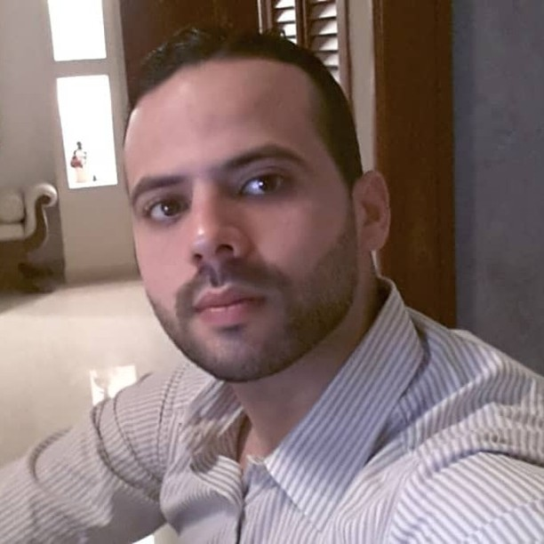
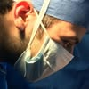
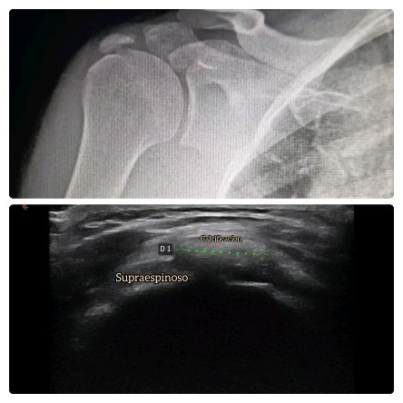

Hombro
Manguito rotador, tendinitis calcificada, luxación, lesiones deportivas y artroscopia.
Cirugía de la mano y reconstrucción del miembro superior.
Traumatólogo y ortopedista formado en la UDO y el Hospital Universitario Luis Razetti, sub-especializado en la mano, la muñeca, el codo y el hombro. Un terreno donde el detalle lo cambia todo — y donde su nombre merece una página propia, no una ficha prestada.
No es un traumatólogo genérico: cada región del miembro superior tiene su propio detalle. Esto es lo que atiende, de arriba a abajo.
Manguito rotador, tendinitis calcificada, luxación, lesiones deportivas y artroscopia.
Epicondilitis (codo de tenista), rigidez, fracturas y lesiones del deportista.
Túnel carpiano, fractura de radio distal, ganglión y artroscopia de muñeca.
Reconstrucción, tendones, dedo en gatillo, fracturas, microcirugía y nervios.


El Dr. Pedro Tovar es médico cirujano egresado de la Universidad de Oriente, con residencia en Traumatología y Ortopedia en el Hospital Universitario Luis Razetti de Barcelona. Su enfoque: la cirugía de la mano y la reconstrucción del miembro superior — una de las áreas más finas y menos frecuentes de la ortopedia.
Atiende en el Centro de Especialidades Anzoátegui (CEACA), en Lechería. Consulta orientada al diagnóstico claro y al plan de tratamiento que el paciente entiende: qué tiene, qué se puede hacer y qué esperar.
El Dr. Tovar publica contenido educativo real — radiografías, ecografías, explicaciones. Hoy vive en el feed de Instagram; mañana, en su propia página, indexado a su nombre.

“Tendinitis calcificada del manguito rotador” — un caso, una radiografía, una ecografía y una explicación clara.
Es exactamente el tipo de autoridad que un paciente busca antes de operarse. El problema no es el contenido: es que se pierde en un feed que él no controla y que Google no indexa. Una página propia convierte cada publicación en un activo permanente — y en una razón más para elegirlo a él.
Ver su Instagram →Sin depender de portales de terceros ni de la centralita del hospital. El paciente entra, entiende y te escribe — a ti.